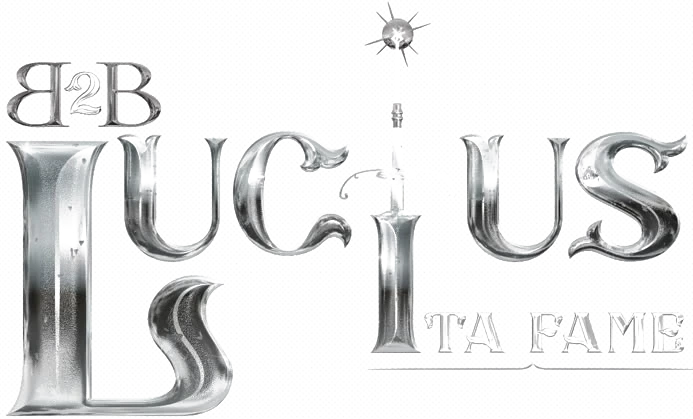
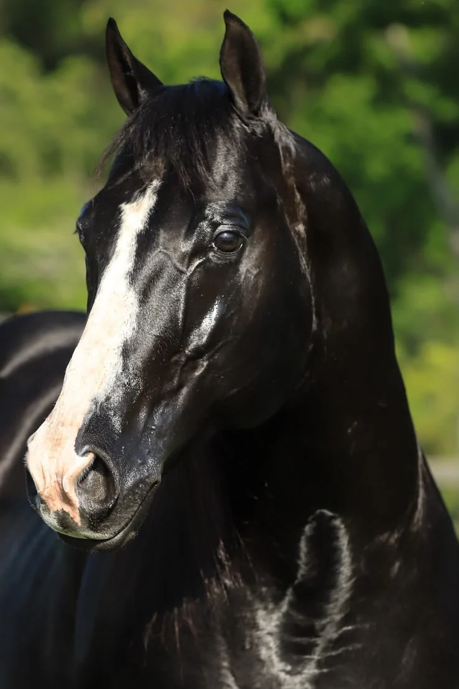
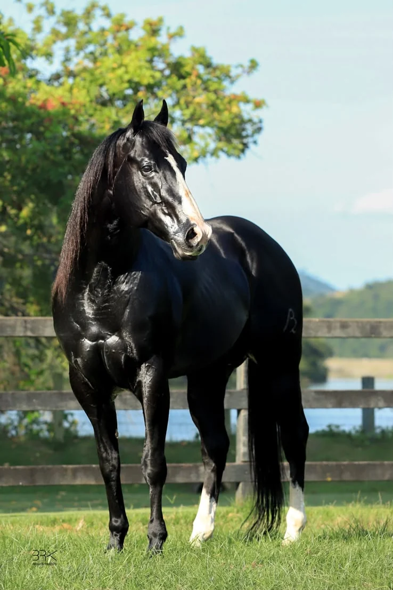

B2B Lucius Ta Fame

Grande nas pistas e na reprodução. Nascido no B2B Ranch, filho de Tux N Rolls com KR The Black Pearl, Lucius já tem filhos se provando nas principais provas do país.
- Nascimento
- 5 de dezembro de 2012
- Pelagem
- Zaino
- Pai
- Tux N Rolls
- Mãe
- KR The Black Pearl
- Irmão próprio
- B2B Maximus Rolls
- Criação
- B2B Ranch
A próxima geração
- 16.671Menor tempo de B2B Aphrodite Rolls, uma das primeiras gerações de Lucius a se provar em pista.
- Top 3B2B Brave Rolls, sua filha, na final do Potro do Futuro ABQM 2026.
- R$ 50.958Em ganhos de B2B Brave Rolls pelo SGP, correndo na casa dos 16 segundos.
- 2028B2B Darwin Bar Belle, filho com Mended Heart, é Potro do Futuro 2028.


Lucius é filho de Tux N Rolls com KR The Black Pearl. É irmão próprio de B2B Maximus Rolls e irmão paterno da B2B Lovergirl Rolls, a única tríplice coroada do Brasil nos Três Tambores.
Na reprodução, é um grande garanhão, assim como foi nas pistas. É pai da B2B Brave Rolls, top 3 na final do Potro do Futuro ABQM 2026, já com R$ 50.958,00 em ganhos pelo SGP e correndo na casa dos 16 segundos, e da B2B Aphrodite Rolls, uma das primeiras gerações a se provar em pista, com menor tempo de 16.671.
Família e descendentes
- Tux N RollsPaiFirst Down Dash × Zevis Doll. A base da criação B2B.
- B2B Lovergirl RollsIrmã paternaÚnica tríplice coroada do Brasil nos Três Tambores.
- B2B Maximus RollsIrmão próprioOutro destaque da criação B2B Ranch.
- B2B Brave RollsFilhaCom Crystal Mine OFV. Top 3 na final do Potro do Futuro ABQM 2026; R$ 50.958,00 em ganhos pelo SGP.
- B2B Aphrodite RollsFilhaUma das primeiras gerações de Lucius a se provar em pista. Menor tempo: 16.671 s.
- B2B Tiberius RollsFilhoCorre na casa dos 17 segundos.
- B2B Darwin Bar BelleFilhoCom Mended Heart. Potro do Futuro 2028.
Fale com o B2B Ranch sobre B2B Lucius Ta Fame
Coberturas, genética e disponibilidade de produtos: responderemos pelo WhatsApp.
+55 (24) 99944-2266 Falar no WhatsApp